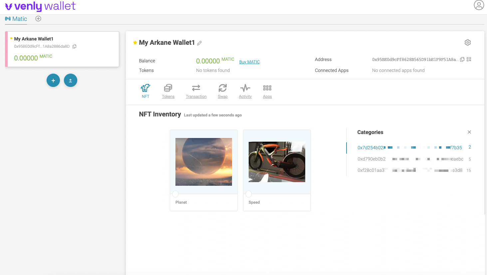

加密钱包接受导入NFT
一、Venly钱包
1）登录加密钱包官网网站：
· 访问地址： https://www.venly.io/
点击右上角 “your wallet”
2）登录个人钱包账号
- 用户可以自己注册Venly账户，或用Google账号等方式登录
3）选择区块链类型
进入钱包后选择链类型为Matic
4）进入个人钱包，获取钱包地址，转移NFT收藏品到个人钱包：
- 进入Matic链的钱包页面，可进行相关信息浏览
其中Address：为个人钱包地址；
此时，可将NFT转移此钱包地址。
5）查看自动导入的NFT
- 如果确定此钱包已经被转入NFT收藏品，钱包可以自动导入NFT进行查阅展示：
- 点击NFT tab，展示相关NFT（如果遇到图片加载不出来情况，请稍后30min后再进行访问即可）

二、MetaMask APP钱包
1）登录MetaMask APP钱包
2）设置网络：
- 点击“设置->网络”

- 点击“添加网络”
- 在新建页面输入以下网络信息：

- 添加网络成功!
- 点击切换钱包的网络，选择为刚配置好的Matic网络。
3）获取个人钱包地址，转移NFT收藏品到个人钱包
- 钱包表示红色位置为个人钱包地址，可将NFT转移此钱包地址。
4）在钱包中导入与展示NFT
- 如果确定钱包已经被转入NFT收藏品，可以通过添加收藏品的方式，将已有的NFT进行展示：
· 点击“收藏品 -->添加收藏品”
- 进入import NFT页面，输入转移到个人钱包的NFT信息：
在“地址”栏输入要导入NFT的对应智能合约地址，
在“ID”栏输入该智能合约下生成输属于个人的NFT的ID；
输入完毕后，点击“添加”。
导入成功，可展示NFT
- 稍后一段时间加载完毕后，可在个人钱包中的收藏品展示画廊中显示出NFT藏品的信息：
- 点击NFT艺术品，查看详细信息：
- MetaMask接受导入NFT完毕。